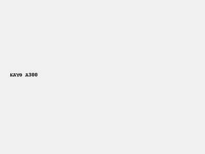
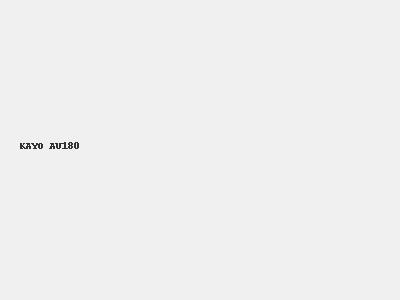
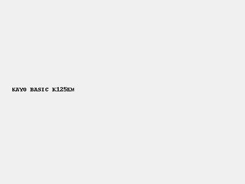
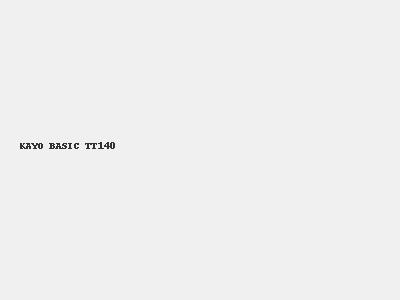
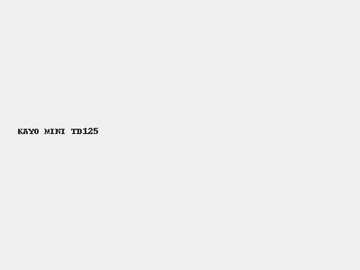
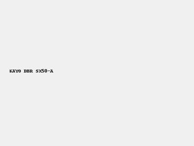
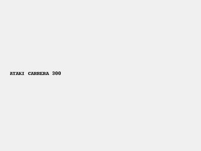

Каталог техники
KAYO AU200
KAYO AU300 Carb
KAYO AU150

KAYO A300

KAYO AU180

KAYO BASIC K125EM
KAYO BASIC K125EA

KAYO BASIC TT140

KAYO MINI TD125

KAYO DBR SX50-A
KAYO K1-L 150 MX
ATAKI BATLLO

ATAKI CARRERA 300
ATAKI CROSSER 300